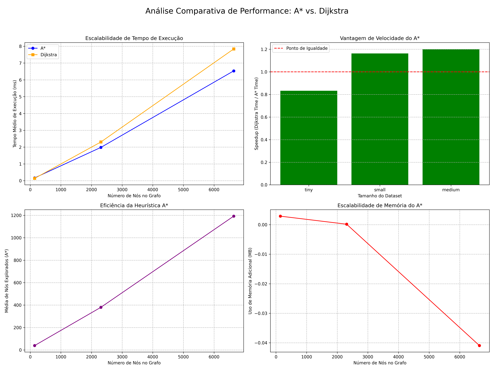

Sessão: 20250922_010451 | 22/09/2025 01:04:58
1.20x
6.5ms
7.8ms
1192
A tabela a seguir compara a performance do A* e do Dijkstra em grafos de diferentes tamanhos, obtidos de áreas geográficas progressivamente maiores.
| Tamanho | Nós | Arestas | Tempo Médio (A*) | Tempo Médio (Dijkstra) | Speedup (A*) | Nós Explorados (A*) |
|---|---|---|---|---|---|---|
| Tiny | 143 | 276 | 0.17 ms | 0.14 ms | 0.83x | 39 |
| Small | 2307 | 5241 | 1.98 ms | 2.30 ms | 1.16x | 380 |
| Medium | 6642 | 15531 | 6.53 ms | 7.84 ms | 1.20x | 1192 |
